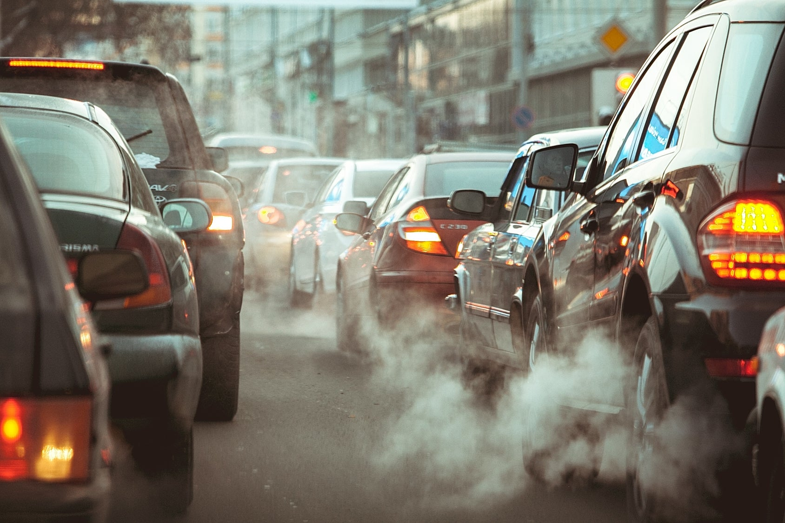
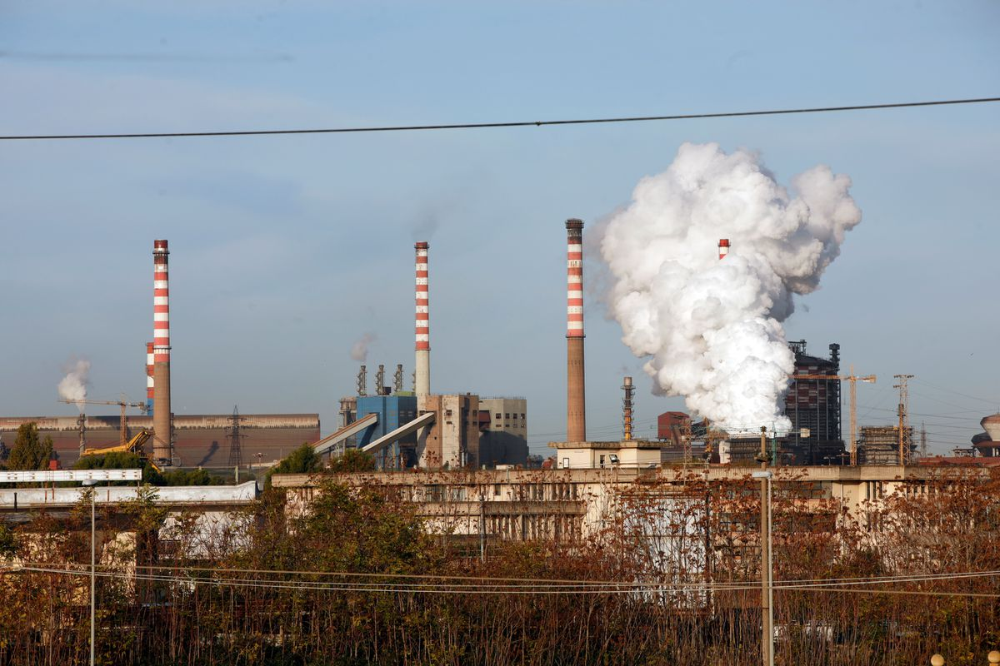

0
È il numero di persone che muoiono ogni anno in Italia per cause legate all'inquinamento atmosferico.
L’inquinamento atmosferico è un complesso problema che nasce da molteplici cause: tra queste possiamo citare il traffico cittadino, il riscaldamento domestico e la produzione industriale. Alcuni potrebbero pensare che sia un problema che non ci riguarda o di cui dovrebbero occuparsi solo Paesi come Cina, Stati Uniti e India, ma non è proprio così.
Gli ultimi dati di Legambiente (2020) dimostrano infatti che ogni anno in Italia muoiono più di 50.000 persone a causa dell’inquinamento. Queste morti premature sono dovute principalmente all’esposizione eccessiva ad inquinanti atmosferici come polveri sottili (pericolose per il corpo umano), gli ossidi di azoto (gas incolore ed inodore) e l’ozono troposferico (inquinante che si forma in presenza di altri materiali come gli ossidi d'azoto).
Se le linee guida dell’OMS stabiliscono che il limite massimo di Pm10 (le polveri sottili) deve essere di 20 µg/m3, la media annuale di Pm10 in molte città italiane è di oltre 70 ug/m3. Questo limite viene superato sia al Nord che al Sud, con Torino che è la città più inquinata. Secondo i dati di Legambiente, le città più inquinate dal Pm10 in Italia sono le seguenti:
- Torino (35µg/mc)
- Milano, Padova e Rovigo (34µg/mc)
- Venezia e Treviso (33 µg/mc)
- Cremona, Lodi, Vicenza, Modena e Verona (32 µg/mc)
- Avellino (31µg/mc)
- Frosinone (30 µg/mc)
- Terni (29 µg/mc)
- Napoli (28 µg/mc)
- Roma (26 µg/mc)
- Genova e Ancona (24 µg/mc)
- Bari (23 µg/mc)
- Catania (23 µg/mc)
Negli ultimi anni l’Unione Europea ha ideato e messo in vigore un’ampia serie di direttive che hanno portato evidenti miglioramenti alla qualità dell’aria. Purtroppo questo non basta: le persone che si ammalano e muoiono per colpa dell’inquinamento sono ancora molte. Si stima infatti che nella sola Europa muoiano circa 400.000 persone all’anno per l’inquinamento. I costi sanitari legati all'inquinamento, inoltre, vanno dai 330 ai 940 miliardi di euro all’anno.
La Commissione Europea ha concluso che le azioni intraprese in questi anni hanno avuto un parziale successo, riconoscendo che c’è ancora molto da fare per arginare e tentare di risolvere il problema. Una nota "positiva" arriva dal 2020: data la pandemia di COVID-19, l’inquinamento proveniente dal traffico è calato notevolmente nei Paesi in cui i governi locali hanno applicato il “lockdown”, come confermato dall’ultimo report sulla qualità dell’aria dell’UE. Nel 2021, come parte del Green Deal europeo, l’UE ha deciso di revisionare le direttive sulla qualità dell’aria, ora più allineate alle raccomandazioni stabilite dall’OMS.